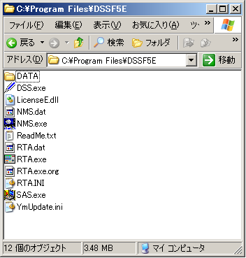
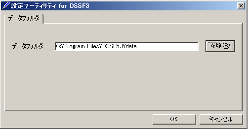

DSSF3 > RA > インパルス応答測定 > 測定ガイド
測定データのバックアップ
リアルタイムアナライザ（RA）の設定データは、オンラインアップデートでは上書きされることはありません。しかし、なんらかの事情でプログラムを再インストールする場合は、設定データを退避させておく必要があります。設定データは、以下のフォルダにあります。このDATAフォルダを、一旦別な場所に移動し、再インストール後、元の場所に戻すか、後で説明するように、「設定ユーティリティ」を使って、DATAフォルダの場所を指定することもできます。
C:\Program Files\DSSF5E\DATA

設定ユーティリティによるDATAフォルダの指定
スタートメニューから、「設定ユーティリティ」を起動します。[参照]ボタンをクリックして、上記フォルダ内の「FOLDER.DBF」ファイル、または移動した先のDATAフォルダ内の「FOLDER.DBF」ファイルを指定します。これで、次回起動時から、この設定データが読み込まれ、設定を変更した場合は、このフォルダ内の設定データが買い換えられます。

DSSF3 > RA > インパルス応答測定 > 測定ガイド